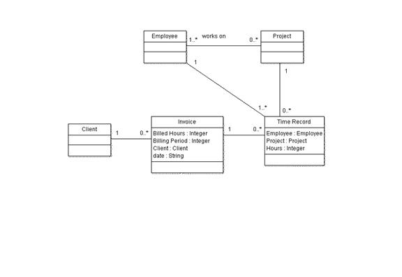

OUM |
Task Overview |
||
Method Navigation |
Current Page Navigation |
||
|
|
||||||||
The purpose of this task is to analyze all the candidate services listed in the Service Portfolio - Candidate Services (RA.025). Once this task is completed, the Service Portfolio is updated to contain the list of service candidates that are required to support the project requirements. The service candidates are organized to indicate how to move forward with each candidate.
For SOA services you will typically have a list with required new services, a list of change requests against existing services, and a list of reuse requests for existing services proposed by the project.
For Cloud services, you may choose to organize the service candidates similarly if the enterprise is the provider of Cloud SaaS services. However, in other Cloud scenarios, you may find another approach for organizing the services to be more suitable.
In addition, the proposed services are registered in the Enterprise Repository to allow other projects to discover the proposed changes.
It is a leading practice to have the proposed services from the project reviewed by service portfolio management and enterprise architecture. For each entry on any of the lists in the Service Portfolio, define who should be given the responsibility of delivering each service. For most points, the delivery and reuse or consumption of services will be the responsibility of the project. However, in the case of existing services that need revisions, the delivery will often need to be provided by the original creators, or owners of that service (either internal or external if the provider is external to the enterprise).
B.ACT.AE Analyze - Elaboration
C.ACT.AC Analyze - Construction
Service Portfolio - Proposed Services
The Proposed Services includes both the set of services the project proposes as new services to be created by the project team and the set of existing services the project plans to consume.
When an Enterprise Repository has been established, the service portfolio is updated with the new services or service versions.
You should follow these steps:
No. |
Task Step | Component | Component Description |
|---|---|---|---|
1 |
Perform classification. | Classified Service Candidate | The Classified Service Candidates shows how the service candidates are classified against the classifications defined by Service Portfolio Management. |
2 |
Determine evaluation and weighting criteria. | Evaluation and Weighting Criteria | The Evaluation and Weighting Criteria explains the method and criteria against which each service candidate will be analyzed. |
3 |
Evaluate candidates. | Evaluated Service Candidates | The Evaluated Service Candidates list all the service candidates with their evaluation result and reasoning. |
4 |
Determine dependencies. | Service Dependencies | The Service Dependencies describes existing service dependencies. |
5 |
Assign ownership. | Service Candidate Ownership | The Service Candidates Ownership documents the Identified owner for each service candidate. |
6 |
Update the Service Portfolio. | Service Portfolio - Proposed Services | The updated Service Portfolio - Proposed Services is updated with the results of the analysis. When an Enterprise Repository is being used, the Service Portfolio is part of the repository. |
7 |
Perform service traceability. | Service Traceability | The Service Traceability shows the traceability from requirements (use cases, business processes, or supplemental requirements) to the service(s) that should implement the requirements. Optionally, you can use the MoSCoW List-Excel (RD.045) for traceabiilty of requirements when there is no Enterprise Repository. |
8 |
Review results. | Service Assets | Review the results of your analysis. |
Here you perform a first categorization of all the new service candidates you have identified so far. Typically you will use some predefined categories that may have been defined by the Service Portfolio Management process of the Enterprise. If no classification of categories have been defined earlier, then it will be your responsibility to develop one that is appropriate for the situation.
During this exercise, you may discover new candidate services. If so, include these in the list of candidates, and document these in a similar way as defined by the service portfolio management process and the enterprise repository. If a service cannot be classified against exactly one category, this typically shows a service boundary violation. For each boundary violated, you should split the service to fit. As a result you may see a single candidate service become multiple candidate services, each with a finer granularity than the original. In that case, check the repository again to avoid creation of a duplicate. In that case, check the repository again to not create a duplicate. For SOA Services, refer to the SOA Service Boundary Analysis technique for more information.
For each new candidate service proposed for the project:
SOA Services Example:
In a time management project, the Time Management Service is a process service that manages the submission of invoices based on employee timesheet submitted for projects.
The Time Management Service (service candidate) includes the following capabilities:
The service is classified as follows:
Further analysis of the components of the service operations results in the refactoring the service into three services:
The Domain Model shown below is used to allocate responsibilities to each service based on the classes in the model.

Before starting the evaluation of the service candidates, you need to determine exactly what should be evaluated. For example for a SOA engagement, you typically evaluate whether or not you want to develop or reuse a candidate. However, for a Cloud type of engagement you may evaluate whether a service candidate is appropriate for the cloud, and if so whether it is best suited to be deployed in a private or public cloud. You will also need to determine the evaluation criteria, and what weighting criteria you will use for of those evaluation criteria.
The evaluation criteria must be chosen so that you will be able to validate the benefits and evaluate the risks for either developing each new service, or for reusing or consuming a known existing service (internally or externally).
If the service candidates are SOA service candidates, consider evaluating for the following types benefits:
Also if the service candidates are SOA service candidates, consider the following risks factors:
See the SOA Service Identification and Discovery technique for more guidance in the justification criteria for SOA services.
On the other hand, if the service candidates are cloud service candidates, you may consider evaluating against a completely different set of criteria, such as the following:
There are many organizations, including Oracle, that have defined candidate cloud selection tools. Refer to the Cloud Resources on the Supplemental Guidance page for further information.
The whole purpose of the analysis is to maximize the business benefit ensuring that you best meet the requirements, and minimizing the risks for the organization.
For each new candidate, evaluate against all criteria as defined in the previous step that are relevant for the type of service candidate.
When you have evaluated a service candidate against the criteria, you should be able to determine the potential business value of moving forward with the candidate, and how it fits the requirements. You should also be able to determine the potential risks, and whether the risks can be mitigated. For each service candidate, you should summarize the potential business benefits, and the known risks, including potential risk mitigation strategies.
Reflect the results of the benefits and risks analysis and decide if the candidate can be abandoned. Abandoned candidates need to be further analyzed in application scope to decide upon an implementation strategy.
For each service listed to be reused with or without revisions, or each service listed to be consumed from another supplier, follow the validation process to prove the usability in the scope of the current project. Consider the following aspects:
The SOA Service Identification and Discovery technique provides more guidance on the reuse validation process.
In the case of using an existing known service, contact the owner of the service (internal or external) that you are evaluating for reuse. Preferably, you work together with the service originator to consider the new requirements and to decide whether the service can be reused, or if the requirements themselves need to change.
For each new service candidate, identify the QoS attributes that include:
For each existing service expected to be used:
The service candidate Time Recording Service is a new service, which exposes an existing COTS application. It is expected to increase the demand on the existing legacy application. Analysis suggests the following non-functional requirements, derived from the use case descriptions, or the equivalent requirements document.
Response time
Demand
Identify existing services that the project requires to reuse and identify changes that will be needed for reuse.
Changes may include, among others:
Investigate any dependencies for the service. For a SOA composite service candidate, what are the dependencies to other services? Do they exist and can they be reused, or do they also need to be developed? For a cloud service candidate, what affinities exist to other components, and what level of affinity exist?
Each new service candidate should have an assigned owner. Typically, services should have a business owner. Check with the business sponsor for the project ownership of new service candidates. Typically, the business sponsor will become the owner. But a different owner may be applicable as well, for example, if the service provides access to a legacy system owned by a different line of business.
If the service candidate is provided by an external supplier, the external supplier is the owner, but you should also identify an internal “owner”, to ensure the required sponsorship.
Typically, for services that need to be changed, the owner will not be changed.
Depending on the governance approach chosen, you may need to document the results of your analysis. Specifically, if you want to be able to provide your results to the business, or if you need to initiate a review of your results, a document summarizing the results can be very helpful.
Update the Service Portfolio you created in task RA.025. Add a new chapter “Analysis Results” document the results of the analysis, including potential new service candidates, new service usage candidates or new service revision candidates.
When an Enterprise Repository is being used, the Service Portfolio should be considered to be an asset-type stored within the enterprise repository. The list of new service candidates proposed should have an entry for each new service candidate added to the enterprise repository with status proposed (if not already done as part of Envision work). Create all dependency links to models, requirements, etc. that apply.
For each service that needs to be changed for reuse, create a new version of the service asset already available in the Enterprise Repository. Update the links to the new model versions and requirement versions.
For each service used in the project, regardless if that service is to be reused or is a new service, create a usage agreement asset in the enterprise repository in proposed state and link it to the service asset. If already known, link to the consuming part as well, i.e., another service or an application. In the case where a new application is a new consumer of the service, you might need to create a new asset for the application. Analyze the business requirements to understand the expected load the project will create on the services. For that purpose, analyze the expected increase in volume the business expects over time including peak times on day, week and year. Attach the information to the usage agreement and if already possible translate the business forecast into number of requests against the service.
Review the IT Asset Management technique for further details on the meta data descriptions for services and usage agreements.
If you use an enterprise repository, you may use a report generated from the repository to include the description of the service in the work product. In addition, you may provide the protocol for the justification of the service.
You may also use the tool to create a list for the new service version when that is appropriate. Also, when relevant, you may provide a change requests needed for existing services. For that purpose you can collect the changes resulting from the review of the project requirements, list those requirements to be addressed as a result of the change request.
Before the list for proposed service usage, you should consider including the business forecast you have used to describe the load on each service. The list will need to contain all services to which you have created a usage agreement and should provide a short description covering the scope of planned usage. You may copy this from the Service Portfolio created in RA.025.
If the organization does not have a physical Enterprise Repository, and previous services have been captured in the Service Portfolio template (IP.014), use that same Service Portfolio template (IP.014) to capture the Proposed Services in the same format. This will allow you to easily merge a candidate service into the Service Portfolio at a later point, as appropriate.
All services should be traceable to specific textual requirements, high-level use cases, business processes, or supplemental requirements. Linking the services to those requirements provides useful information for later, in particular for change impact analysis and test preparation.
During the task to identify candidate services (RA.015), you should already have documented the origin of the candidate (i.e., the source of discovery). Services that were originally discovered via captured requirements, policies, domain models, etc. should be revisited to see whether they can be mapped to use cases or to a high-level business process. If, so add the corresponding dependency to the Enterprise Repository.
If the governance process defines an external review of your results, you can use the Service Portfolio as handover to the reviewing team or person. In that case, the reviewer will be responsible for changing each service candidate state from proposed, to validated or declined.
Otherwise, you should ask for an enterprise architect to support you on the review of your analysis. Change the state of the services to validated or declined according to your results.
For all declined candidates, new versions or usage agreements for an alternative solution need to be identified possibly triggering another analysis cycle.
This task has supplemental guidance that should be considered if you are executing a service based on the BPM Project Engineering view. Use the following to access the task-specific supplemental guidance. To access all BPM Project Engineering supplemental information, use the BPM Project Engineering Supplemental Guide.
This task has supplemental guidance that should be considered if you are doing a SOA Application Integration Architecture (AIA) implementation. Use the following to access the task-specific supplemental guidance. To access all SOA AIA supplemental information, use the OUM SOA AIA Supplemental Guide.
This task involves the following method roles:
Role |
Responsibility |
% |
|---|---|---|
Business Analyst |
Analyze services. | 50 |
System Architect |
Analyze services. If possible, you may want use a system architect with extensive SOA experience. | 50 |
* Participation level not estimated.
You need the following for this task:
Prerequisite |
Usage |
|---|---|
Governance Implementation (ENV.GV.100) |
If an Enterprise Repository is in use, the Governance Implementation (that is, the related policies and processes) describes how to govern the proposed services and their relationships to other IT assets. In addition, ensure that the final proposed services and their relationships are added/updated in the repository. |
Service Portfolio - Candidate Services (RA.025.2) |
The document provides the scope for the analysis and will be updated with the results |
Prerequisite |
Usage |
|---|---|
Service Portfolio - Proposed Services (AN.080.1) |
Update the Service Portfolio with new and refined services. |
Governance Implementation (ENV.GV.100) |
If an Enterprise Repository is in use, the Governance Implementation (that is, the related policies and processes) describes how to govern the proposed services and their relationships to other IT assets. In addition, ensure that the final proposed services and their relationships are added/updated in the repository. |
The following techniques are available to assist with this task:
Technique |
Comments |
|---|---|
Use this technique to access information on the meta data descriptions for services and usage agreements. |
|
Use this technique to understand the service lifecycle and the Enterprise Repository assets used. |
|
Use this technique to understand how to define services in the right level of granularity using boundary analysis. |
|
Use this technique to understand the approach to discover, reuse and identify new service candidates with the help of models and requirement documents. Includes a description of the justification process to analyze benefits and risks. |
The following templates and tools are available to assist with this task:
Technique |
Comments |
|---|---|
MS EXCEL - If the organization does not have a physical Enterprise Repository, and SOA services have been captured in the Service Portfolio template (IP.014), use the Service Portfolio template (IP.014) to capture the Proposed Services in the same format as the Service Portfolio. This will allow you to easily merge a candidate service into the Service Portfolio at a later point, as appropriate. |
Comments |
|
|---|---|
| Provides a scenario example that will be useful when performing this task |
Tool |
Comments |
|---|---|
| The Oracle Enterprise Repository is a COTS Enterprise Repository tool solution that is used to establish and maintain an Enterprise Repository. |
The Service Portfolio – Proposed Services work product is used in the following ways:
Distribute the Service Portfolio – Proposed Services as follows:
Use the following criteria to check the quality of this work product:

Copyright © 2006, 2016, Oracle and/or its affiliates. All rights reserved.